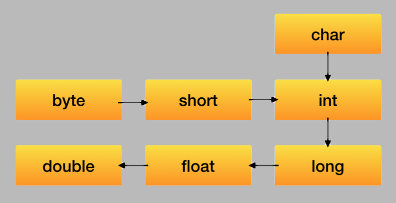

Type casting
There are two kinds of casting of primitive types: implicit and explicit. The first kind is performed automatically by the Java compiler, the second type - only by a programmer.
Implicit casting
The compiler automatically performs casting when the target type is wider than source type:

There is no loss of information because the target type is wider than the source type.
Examples:
int intVal = 8;
long longVal = intVal + 1; // implicit casting from int to long
double doubleVal = longVal; // implicit casting from long to double
Explicit casting
The explicit casting is performed by a programmer when the target type is narrower than the source type. This kind of casting may lose information about the overall magnitude of a numeric value and may also lose precision. Sometimes this can be the desired behavior.
Any type casting not presented in the picture above requires explicit casting, for example: double -> int, long -> char.
Examples:
double d = 2.00003;
long l = (long) d; // it loses the fractional part
int i = (int) l; // explicit type casting required
int val = (int) (1 + 2L + 3); // requires explicit casting because the result is long
When performing explicit casting, type overflow is possible. It is a situation when a value is too large to be written to a type:
long maxLong = Long.MAX_VALUE;
int overflow = (int) maxLong; // int variable can't store this value, the result is -1
More information can be found in Java SE Specification.